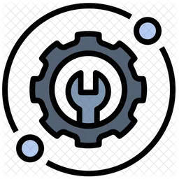

Chase Harler
Systems Engineer
Texas, US
codex@ch-codex.com
Skills
Programming Languages/Frameworks
- Java 4+ years, C++ 4+ years
- Javascript 3+ years, Python 3+ years
- Ansible, Bash
- SQL (heavy in MS-SQL) 3+ years, MySQL, N1QL
Version Control
- Git/GitHub 3+ years, Gitlab 2+
Virtualizing Software
- ESXI 4+ years, Ubuntu KVM
Containers
- Docker, Kubernetes
OS
- Windows Server 2012r2 admin, Ubuntu, Red Hat (CentOS & Rocky), TrueNas, OpenWRT
IOT Devices
- Raspberry Pi 3 & 4, Multitech cellular devices
Hardware Experience
Networking: Cisco routers & L3 switches, Aruba L3 switches, Pacstar routers, HP L3 switches, Teltonika routers, switches & APs
Compute: Dell Poweredge series, HPE Edgeline series, Supermicro
Work Experience
Teltonika Networks - Networking and IoT Engineering Specialist
1+ years
Managed customer support tickets, providing timely troubleshooting and resolution for networking and IoT-related issues.
Consulted with clients to assess needs, recommend solutions, and optimize network and IoT deployments.
Reviewed, refined, and authored troubleshooting guides and configuration documentation to improve efficiency and knowledge sharing.
Maintained a dedicated lab environment for research and development (R&D) as well as cellular Certification teams, ensuring proper access & device readiness for other departments
Oceus - System Engineer
1+ years
Deployed private LTE & 5G networks
Deployed LTE & 5G networks in conjunction with commercial cellular networks
Worked on cellular collaborations between the Department of Defense and T-Mobile
Articles can be found here:
Configured, implemented, and troubleshooted physical hardware & software implementation for cellular networks. Including Radio basestations (RAN), 5G Cores, Kubernetes & Docker deployments
Vendor Hardware used: Cisco, Juniper, HP, Aruba, Palo Alto, Pacstar, Cradlepoint, Ericsson, DELL Poweredge, HPE EdgeLine
Size of infrastructure deployments between commercial grade networks to small tactical pop-up networks
Certified CPI for CBRS networks
Research, Developed & Implemented open source & private licensed software for reliable & continuous production use
Metropak Inc - IT Administrator
4+ years
Maintained company’s computers & various software applications, as well as its primary Windows server & SQL database
Created/optimized workflows & accompanying documentation for various departments in the company, at all levels of the company
Programmed/updated applications based on our database for various departments in the company
Cross-trained various departments on company software
Implemented multiple APIs between various softwares & partnered companies
Led company wide end of year inventory management
Created and serialized various barcodes/labels for client manufacturing needs
Implemented remote workforce software
Deployed new CRM software across company hardware
Developed, deployed & maintained various new & existing software for data collection & analysis (automated & manual)